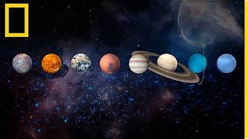
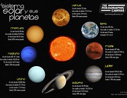
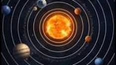

Conoce más
sobre la luna:
https://ciencia.nasa.gov/sistema-solar/la-luna/
sobre Venus:
https://spaceplace.nasa.gov/all-about-venus/sp/
sobre agujeros negros:
https://ciencia.nasa.gov/agujerosnegros/
sobre las estrellas:
https://ciencia.nasa.gov/universo/ciclo-de-vida-de-las-estrellas/
sobre los planetas:
https://espacioentrelazado.es/sistema-solar/planetas-sistema-solar/s
Link en youtube:
https://youtu.be/3xKeX31mQrE?si=Wjx0vp1zypR-Qi1v


